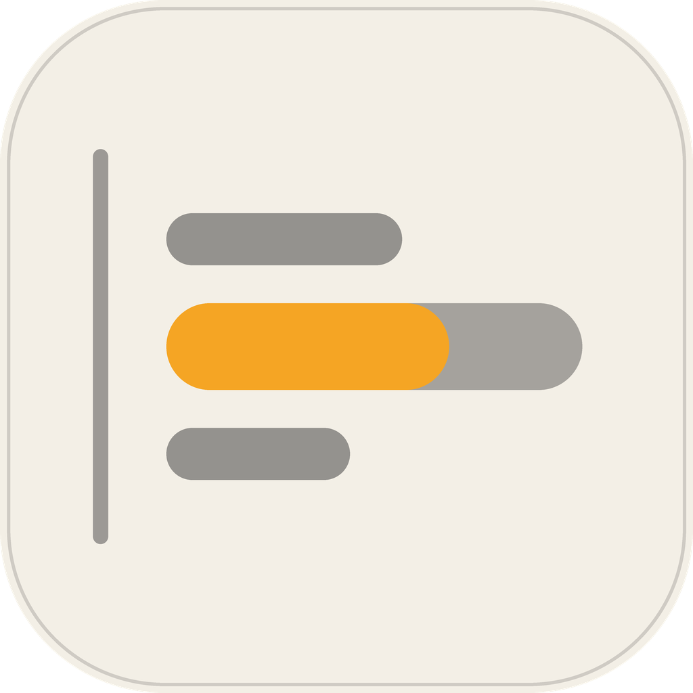
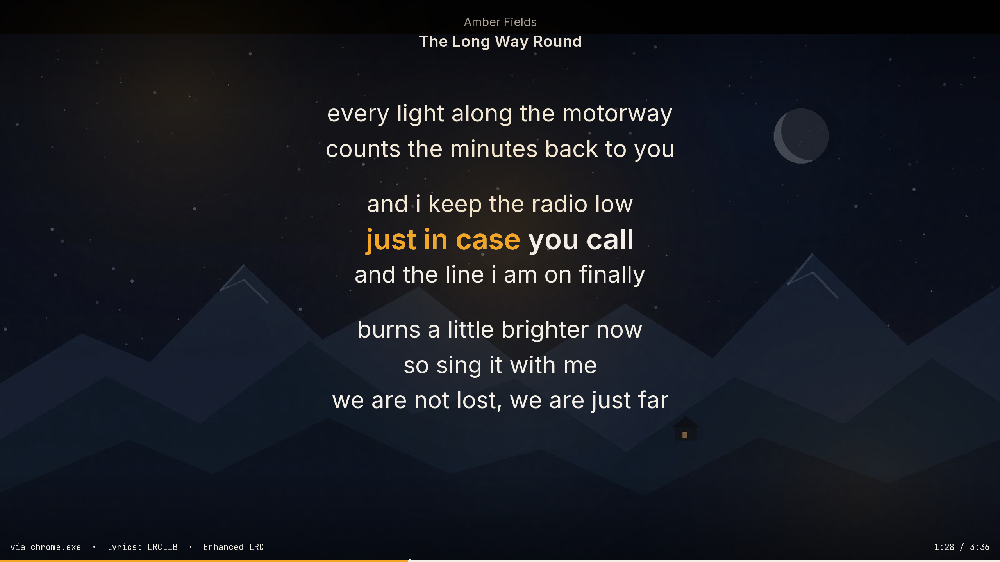

One line, lit
The current line is larger and brighter; nearby lines fade so your eyes find the right place.

Youtube-LyricsFor Windows 10 and 11 · Version 1.8.0
A quiet desktop layer that follows the music and brings one large line into focus. Genuine timing is shown when available; untimed lyrics are clearly marked as estimated. No browser tab or command line needed.
YoutubeLyrics.exe · 64-bit · about 1105 KiB (1,131,520 bytes) · portable Windows x64 build
No installer, account, or administrator rights required. The download is served from this site.
SHA-256: 60a1225fcd857b088cb64061d98b02dd448459f24fed694e11acc580504b02f2 · checksum file

It reads the track information Windows already shares with media controls and keeps the words out of your way until you need them.
The current line is larger and brighter; nearby lines fade so your eyes find the right place.
Enhanced LRC segments use genuine inline timestamps; ordinary LRC uses a line-level wipe. Untimed lyrics are explicitly labeled as estimated scroll.
Lyrics appear on the desktop itself, behind your icons and over your own wallpaper, while music plays, and vanish when it stops. Full-screen and window views are optional. The rebuilt desktop layer has not yet been verified on a Windows PC.
One standalone Windows executable. It lives in the tray and remembers your display settings.
Ctrl+Alt+S opens a compact Win32 settings window — mode, theme, text size, sync, wipe, cover tint and every wallpaper preference. No web view.
Three bundled stills plus a fourth procedural scene drawn at runtime, with rotation, random launch, and background-darkness preferences.
Checks this site, then GitHub Releases, quietly on launch. It asks before downloading and verifies the stable manifest, checksum, size, and x64 executable.
Youtube-Lyrics is a free, open-source Windows desktop app that follows the active media session and makes the current lyric line easy to read. It is a native C++/Win32 program—not a browser wrapper or a video wallpaper. Desktop mode attempts to use Explorer's WorkerW layer and falls back safely if that host is unavailable; the Windows wallpaper behavior is not runtime-verified here.
The app reads the track metadata Windows publishes for media controls. It does not record audio or send telemetry. Lyric lookups use LRCLIB, with lyrics.ovh as an untimed fallback; results are cached locally. Source code and the MIT licence are available on GitHub.
Windows 10 (version 1809 or later) or Windows 11, 64-bit.
The app does not record audio or send telemetry. Lookups send the detected title and artist; LRCLIB's exact-match request also includes album and duration when Windows provides them. Results are cached locally. SHA-256 checksums are provided for the unsigned executable.